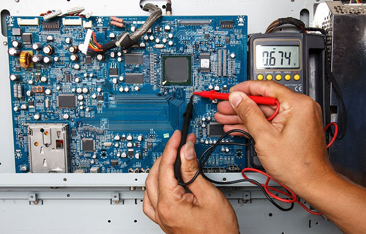
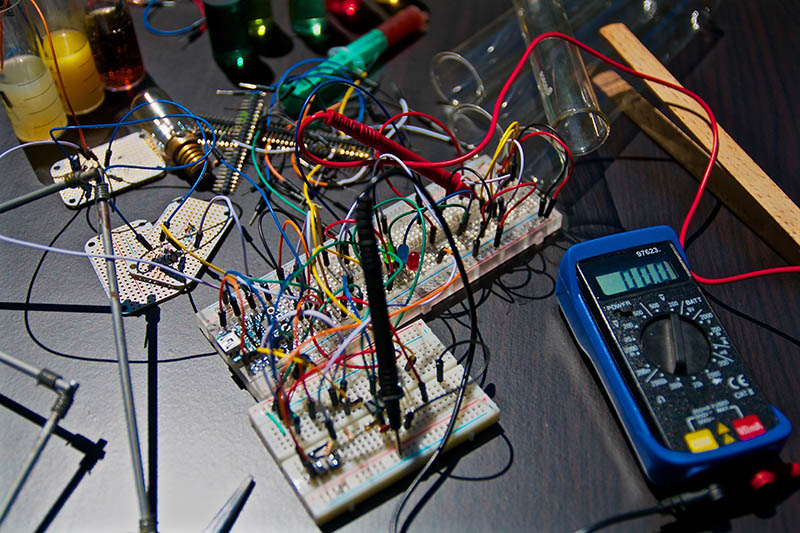

<!DOCTYPE html>
<html lang="en">
<head>
    <meta charset="UTF-8">
<meta http-equiv="X-UA-Compatible" content="IE=edge">
<meta name="viewport" content="width=device-width, initial-scale=1.0">
<title>Blog de Electricidad - Cursos de Electrónica y Electricidad</title>
<meta name="description" content="Blog de cursos de electricidad y electrónica. Aprende conceptos básicos y avanzados de forma práctica y sencilla.">

<!-- SEO -->
<meta name="keywords" content="Electricidad, Electrónica, Cursos, Blog, Circuitos, Voltaje, Corriente, Resistencia, Principios de Electricidad">
<meta name="author" content="Manuel Morales">
<link rel="canonical" href="https://blogelectronica.netlify.app/">

<!-- Open Graph / Facebook -->
<meta property="og:type" content="website">
<meta property="og:url" content="https://blogelectronica.netlify.app/">
<meta property="og:title" content="Blog de Electricidad - Cursos de Electrónica y Electricidad">
<meta property="og:description" content="Explora nuestro blog de cursos de electricidad y electrónica para aprender desde lo básico hasta conceptos avanzados.">
<meta property="og:image" content="public/main.png">

<!-- Twitter -->
<meta property="twitter:card" content="summary_large_image">
<meta property="twitter:url" content="https://blogelectronica.netlify.app/">
<meta property="twitter:title" content="Blog de Electricidad - Cursos de Electrónica y Electricidad">
<meta property="twitter:description" content="Explora nuestro blog de cursos de electricidad y electrónica para aprender desde lo básico hasta conceptos avanzados.">
<meta property="twitter:image" content="public/main.png">

<!-- Preload -->
<link rel="preload" href="css/Normalize.css" as="style">
<link rel="stylesheet" href="css/Normalize.css">
<link rel="preload" href="css/Estilos.css" as="style">
<link rel="stylesheet" href="css/Estilos.css">

<!-- Favicon -->
<link rel="icon" href="public/favicon.ico" type="image/x-icon">
</head>
<body>
    <header class="header">
        <div class="contenedor">
            <div class="barra">
                <a class="logo no-margin center" href="index.html">
                    <h1 class="logo__nombre">Blog<span class="logo__nombre-bold">DeElectonica</span></h1>
                </a>
                <nav class="enlaces">
                    <a href="Nosotros.html" class="enlaces__nav">Nosotros</a>
                    <a href="Cursos.html" class="enlaces__nav">Cursos</a>
                    <a href="Contacto.html" class="enlaces__nav">Contacto</a>
                </nav>
            </div>
        </div>
        <div class="header__texto">
            <h2 class="no-margin">Blog de Electrónica con Consejos y Cursos</h2>
            <p class="no-margin">Aprende de los Expertos de Manera fácil y Apasionante</p>
        </div>
    </header>
    <main class="contenedor">
        <h3>Cursos Disponibles</h3>
        <h4 class="no-margin">Lectura de Diagramas de Circuitos</h4> 
        <div class="curso">
            <div class="curso__img">
                
            </div>
            <div class="curso__información">
            <p class="widget--curso__label">Precio: <span class="widget--curso__info">Gratis</span></p>
            <p class="widget--curso__label">Cupos: <span class="widget--curso__info">50</span></p>
             
                <p class="curso__descripción justificación">Los ingenieros deben ser capaces de diseñar y realizar experimentos, así como de ana-
                    lizar e interpretar datos. La mayoría de los estudiantes ha dedicado muchas horas a
                    realizar experimentos en la preparatoria y la universidad. Para estos momentos ya se le
                    ha pedido analizar e interpretar datos. Así, ya debería estar calificado para esas dos ac-
                    tividades. Mi recomendación es que, en el proceso de realización de experimentos en el
                    futuro, dedique más tiempo a analizar e interpretar datos en el contexto del experimento.
                    ¿Qué significa esto?
                    Si observa una gráfica de tensión contra resistencia o de corriente contra resistencia
                    o de potencia contra resistencia, ¿qué es lo que realmente ve? ¿La curva tiene sentido?
                    ¿Es congruente con lo que la teoría le dice? ¿Difiere de las expectativas y, de ser así, por
                    qué? Evidentemente, la práctica del análisis e interpretación de datos desarrollará esta
                    habilidad.</p>
                </div>
        </div><!--Curso1-->
        <h4 class="no-margin">Uso de Instrumentos de Medición</h4> 
        <div class="curso">
             <div class="curso__img">
                
             </div>
             <div class="curso__información">
             <p class="widget--curso__label">Precio: <span class="widget--curso__info">Gratis</span></p>
             <p class="widget--curso__label">Cupos: <span class="widget--curso__info">50</span></p>
                <p class="curso__descripción justificar">Los procesos industriales exigen el control de la fabricación de los diversos productos obtenidos.
                    Los procesos son muy variados y abarcan muchos  pos de productos: la fabricación de los pro-
                    ductos derivados del petróleo, de los productos alimen cios, la industria cerámica, las centrales
                    generadores de energía, la siderurgia, los tratamientos térmicos, la industria papelera, la industria
                    tex l, etc.
                    En todos estos procesos, es absolutamente necesario controlar y mantener constantes algunas mag-
                    nitudes, tales como la presión, el caudal, el nivel, la temperatura, el pH, la conduc vidad, la velocidad,
                    la humedad, el punto de rocío, etc. Los instrumentos de medición y control permiten el mantenimien-
                    to y la regulación de estas constantes en condiciones más idóneas que las que el propio operador
                    podría realizar.</p>
                </div>
        </div><!--Curso2-->
        <h4 class="no-margin">Instrumentación Industrial</h4>
        <div class="curso"> 
             <div class="curso__img">
                
            </div>
            <div class="curso__información">
            <p class="widget--curso__label">Precio: <span class="widget--curso__info">Gratis</span></p>
            <p class="widget--curso__label">Cupos: <span class="widget--curso__info">50</span></p>
                <p class="curso__descripción justificar">Los transmisores captan la variable de proceso a través del elemento primario y la transmiten a
                    distancia en forma de señal neumá ca, electrónica, digital, óp ca, hidráulica o por radio.
                    La señal neumá ca es de 3 a 15 psi (libras por pulgada cuadrada) (equivale a 0,206-1,033 bar o
                    0,21-1,05 kg/cm 2 ) adoptada en Estados Unidos y los países de habla inglesa, o 0,2-1 bar (20-100 kPa)
                    empleada en los países que u lizan el sistema métrico decimal. La señal electrónica normalizada
                    es de 4 a 20 mA de corriente con nua, si bien se u lizan de 1 a 5 mA c.c., de 10 a 50 mA c.c. y de
                    0 a 20 mA c.c.
                    La señal digital consiste una serie de impulsos en forma de bits. Cada bit consiste en dos signos, el
                    0 y el 1 (código binario), y representa el paso (1) o no (0) de una señal a través de un conductor. Si
                    la señal digital que maneja el microprocesador del transmisor es de 32 bits entonces puede enviar
                    32 señales binarias (0 y 1) simultáneamente.</p>
                </div>
        </div><!--Curso3-->
        <h4 class="no-margin">Sistemas Digitales</h4>
        <div class="curso"> 
             <div class="curso__img">
                
            </div>
            <div class="curso__información">
            <p class="widget--curso__label">Precio: <span class="widget--curso__info">Gratis</span></p>
            <p class="widget--curso__label">Cupos: <span class="widget--curso__info">50</span></p>
                <p class="curso__descripción justificar">Las teorías de control que se utilizan habitualmente son la teoría de control clásica (también
                    denominada teoría de control convencional), la teoría de control moderno y la teoría de control
                    robusto. Este libro presenta el tratamiento del análisis y diseño de sistemas de control basado en
                    la teoría de control clásica y teoría de control moderno. En el Capítulo 10 se incluye una breve
                    introducción a la teoría de control robusto.
                    El control automático ha desempeñado un papel vital en el avance de la ingeniería y la cien-
                    cia. El control automático se ha convertido en una parte importante e integral en los sistemas de
                    vehículos espaciales, en los sistemas robóticos, en los procesos modernos de fabricación y en
                    cualquier operación industrial que requiera el control de temperatura, presión, humedad, flujo,
                    etc. Es deseable que la mayoría de los ingenieros y científicos estén familiarizados con la teoría y
                    la práctica del control automático.</p>
            </div>
        </div><!--Curso4-->
             <div class="curso__información">
                <p class="curso__descripción justificar">Como estudiante, usted necesita estudiar matemáticas, ciencias e ingeniería con el pro-
                    pósito de ser capaz de aplicar esos conocimientos a la solución de problemas de inge-
                    niería. La habilidad aquí es la capacidad para aplicar los fundamentos de esas áreas a la
                    solución de un problema. Así que, ¿cómo desarrollará y mejorará esta habilidad?
                    El mejor método es resolver tantos problemas como sea posible en todos sus cur-
                    sos. Sin embargo, para que realmente pueda tener éxito con esto, debe dedicar tiempo a
                    analizar dónde, cuándo y por qué tiene dificultades y así llegar fácilmente a soluciones
                    exitosas. Quizá le sorprenda descubrir que la mayoría de sus dificultades para la resolu-
                    ción de problemas tienen que ver con las matemáticas, más que con su comprensión de
                    la teoría. También podría descubrir que comienza a resolver los problemas demasiado
                    pronto. Tomarse tiempo para reflexionar en los problemas y en la manera en que debería
                    resolverlos siempre le ahorrará a la larga tiempo y frustraciones.</p>
            </div><!--Curso info-->
         </div><!--Cursos-->
    </main>
    <footer class="footer">
        <div class="contenedor salvoconducto"><h2>Dispon del Conocimiento y la sociedad dispondra mejor de ti<h2>
            <p>El mundo actual requiere de un conocimiento cada vez más profundo de la Tecnología
               la electronica es una ciencia que innova todos los días y te invitamos a formar parte 
               de esa aventura, en hora buena, bienvenido.</p>
               <a href="Entrada.html" class="boton boton--terciario">Bienvenido</a></div>
               <div class="contenedor">
                   <div class="barra">
                       <a class="logo no-margin center" href="index.html">
                           <h1 class="logo__nombre">Blog<span class="logo__nombre-bold">DeElectonica</span></h1>
                       </a>
                       <nav class="enlaces">
                           <a href="Nosotros.html" class="enlaces__nav">Nosotros</a>
                           <a href="Cursos.html" class="enlaces__nav">Cursos</a>
                           <a href="Contacto.html" class="enlaces__nav">Contacto</a>
                       </nav>
                   </div>
               </div>
               <script type="text/JavaScript" src="https://ajax.googleapis.com/ajax/libs/jquery/3.6.0/jquery.min.js"></script>
               <script type="text/JavaScript" src="JavaS/script.js"></script>
               <section class="rights">
                &copy; Manuel Morales Freelancer Todos los Derechos Reservados
            <address>Venezuela Edo Carabobo 2021</address>
            <small>&copy; 2021 <a href="https://www.linkedin.com/in/manuel-esteban-morales-zuarez-68573b189/"
                target="_blank">Manuel Morales</a></small>
                <small>&copy; 2021 <a href="manuesteban1990@gmail.com">Send me an Email</a></smal>
            </section>
    </footer> 
</body>
</html>